Ô nhiễm không khí là một trong những vấn đề môi trường nghiêm trọng nhất hiện nay trên phạm vi toàn cầu. Theo thống kê của Tổ chức Y tế Thế giới (WHO), hơn 90% dân số thế giới đang sống trong môi trường có chất lượng không khí vượt ngưỡng an toàn. Nhiều quốc gia phát triển và đang phát triển, đặc biệt là các nước châu Á như Ấn Độ, Trung Quốc, Pakistan... thường xuyên ghi nhận chỉ số bụi mịn PM2.5 ở mức cao
Hậu quả của ô nhiễm không khí không chỉ ảnh hưởng đến sức khỏe con người mà còn gây biến đổi khí hậu, mưa axit và ảnh hưởng đến hệ sinh thái toàn cầu. Đây là thách thức lớn đòi hỏi sự phối hợp hành động từ các chính phủ, doanh nghiệp và người dân.
Ô nhiễm không khí là vấn đề không chỉ của riêng cá nhân hay một quốc gia, mà là trách nhiệm chung của toàn xã hội. Để cải thiện tình hình này, cần có sự chung tay của chính phủ, doanh nghiệp và người dân, hướng tới một môi trường sống trong lành và phát triển bền vững.
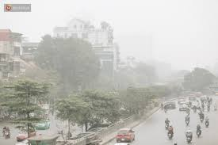
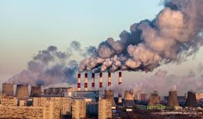
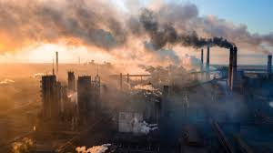
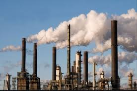
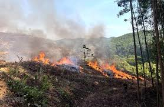
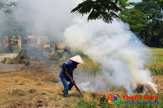
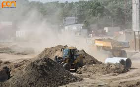
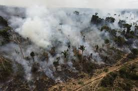
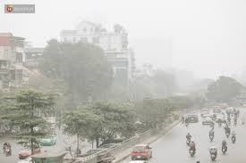
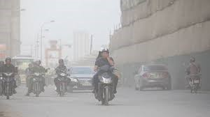
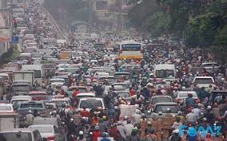